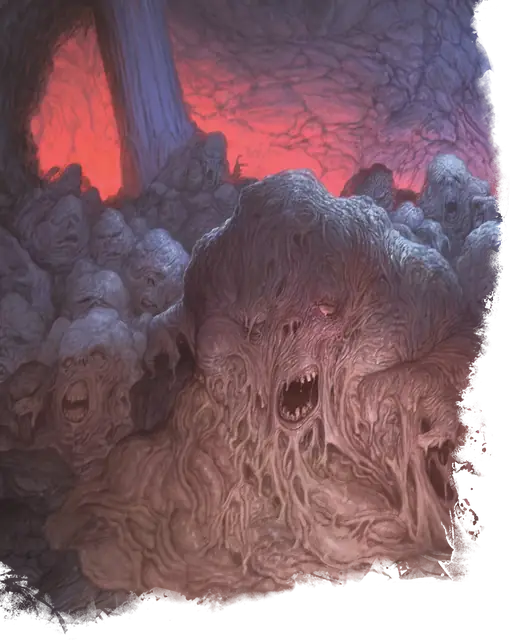

Лемур
Lemure
Среднее Исчадие (Дьявол), Принципиальное Злое

Класс Защиты 9 Инициатива −3 (7)
Хиты 9 (2к8)
Скорость 20 футов
| мод | спас | ||
|---|---|---|---|
| СИЛ | 10 | +0 | +0 |
| ЛОВ | 5 | −3 | −3 |
| ТЕЛ | 11 | +0 | +0 |
| мод | спас | ||
|---|---|---|---|
| ИНТ | 1 | −5 | −5 |
| МДР | 11 | +0 | +0 |
| ХАР | 3 | −4 | −4 |
Сопротивление урону Холод
Иммунитеты Огонь, Яд; Испуганный, Отравленный, Очарованный
Чувства Тёмное зрение 120 футов (игнорирует магическую Темноту), пассивное Восприятие 10
Языки понимает Инфернальный, но не говорит
Опасность 0 (10 опыта; БВ +2)
Особенности
Адское возрождение. Лемур, умерший в Девяти Преисподних, возвращается к жизни с полными Хитами через 1к10 дней, если только он не был убит существом, находящимся под действием заклинания Благословение, и если его останки не были сбрызнуты Святой водой.
Действия
Мерзкая слизь. Бросок рукопашной атаки: +2, досягаемость 5 фт. Попадание: 2 (1к4) урона Ядом.
Бонус мастерства +2
Среда обитания Девять преисподних
Сокровища Отсутствуют
Лемуры
Дьяволы агонии и отчаяния
Лемуры — самые слабые из всех дьяволов, которые появляются из злых душ, начисто лишённых воспоминаний о прошлой жизни. Из этих сгустков адской протоматерии проступают лишь неясные формы конечностей и черты измученных лиц.
Лемуры мучают более слабых существ, однако в Девяти Преисподних таких почти нет. Поэтому им приходится повиноваться приказам более могущественных дьяволов, чтобы самим избежать больших страданий.